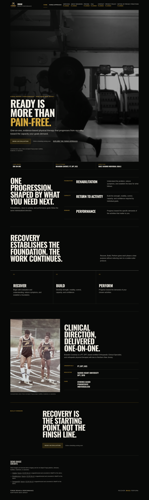
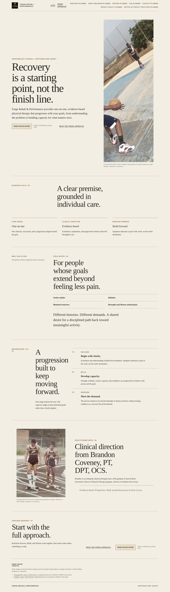
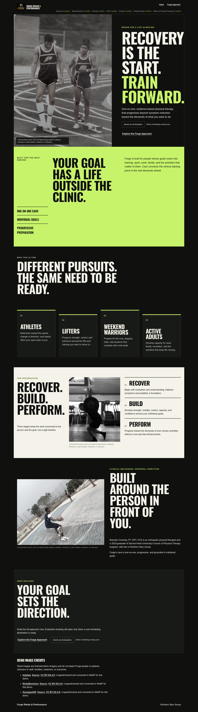

Greenfield concept review / August 2026
Website Strategy &
Digital Presence Opportunity
A focused path for translating Forge Rehab & Performance's one-on-one care model into a clear, credible, and differentiated digital presence.
FORGE / 01Business snapshot
A progression built around the person, not a generic protocol.
Forge Rehab & Performance is positioned around one-on-one, evidence-based, progressive care built around individual goals.
The central opportunity is not to add more claims. It is to make the approved model unmistakable: help active people understand how care can move from symptom reduction toward strength, mobility, control, capacity, confidence, and the demands of chosen activities.
Approved Foundation
Business
Forge Rehab & Performance
Geography
Northern New Jersey
Practitioner
Brandon Coveney, PT, DPT, OCS
Primary goal
Book an evaluation
Core progression
Recover. Build. Perform.
Evidence boundary. This is a greenfield strategy, not an audit of a current Forge website. Owner-provided content is authoritative. Public sources corroborate selected practitioner details. Market observations describe competitor patterns, not Forge performance. No traffic, ranking, conversion, accessibility, SEO, patient-outcome, or revenue claims are made.
Market findings
Personalized care is expected. The progression can be remembered.
Observed Across Five Competitors
- One-on-one and personalized care function as category table stakes.
- Traditional high-volume physical therapy is frequently positioned as the opponent.
- Rehabilitation is commonly connected to fitness, sport, or performance.
- Credentials and testimonial sections carry much of the trust burden.
- Dark sports branding, gym imagery, and broad service menus recur.
- Long homepages repeat consultation or evaluation prompts.
Strategic White Space
Own a concise capacity-building narrative instead of another modality catalog.
- Make Recover / Build / Perform the memorable organizing idea.
- Give each page one job and reserve detail for dedicated routes.
- Use owner-approved pricing transparently on the eventual Pricing page.
- Build trust with verified credentials and process clarity until real reviews or outcomes exist.
Avoid Category Imitation
Do not default to interchangeable black-and-red gym branding.
Do not borrow anti-traditional-PT slogans or competitor-specific language.
Do not substitute generic review walls, devices, or readiness scores for evidence.
Competitive set reviewed: Ethos Physical Therapy, EDGE Physical Therapy and Sports Medicine, Achieve Physical Therapy, Next Level Physio, and Pursue PT.
FORGE / 03Positioning opportunity
Turn a clinical philosophy into a simple visitor story.
Recover
Begin with evaluation and understanding, reduce symptoms, and establish a foundation.
Build
Develop strength, mobility, control, capacity, and confidence.
Perform
Progress toward the demands of the individual's chosen activities.
What The Homepage Must Do
- Make Forge's audience and point of view clear within the first viewport.
- Introduce, rather than exhaust, the Recover / Build / Perform progression.
- Establish one-on-one care and verified practitioner authority.
- Route interested visitors to the substantial Forge Approach page.
- Show booking as unavailable until a real EMR destination is supplied.
What The Approach Page Must Do
- Explain each stage in clear, evidence-safe language.
- Connect progression to individual goals without guaranteeing results.
- Explain individualized, one-on-one care without attacking alternatives.
- Make Build Forward a philosophy with substance, not only a slogan.
Recommended sitemap
Nine focused production routes. Two routes per concept prototype.
Why Separate Pages
A concise homepage can establish fit and direction without becoming a long sales document. Dedicated pages make pricing, services, biography, policies, and contact information easier to find and maintain.
Concept Prototype Scope
Each concept prototype is intentionally narrower than the recommended production site. It tests the visual and UX direction through Home and Forge Approach only. It is not a deployed website and does not indicate that the other seven routes are built.
Concept 01 / Cinematic Authority
Cinematic Clinic
Image-led clinical authority with a premium black-and-gold edge.
Clinical
Premium
Ready is more than pain-free.

Deep black / forged gold / warm ivory / structural gray
Why choose it
The most cinematic clinical direction. Focused movement imagery, compact proof, and a disciplined progression make Forge feel premium and credible without inventing technology or outcomes.
Best fit
Choose Cinematic Clinic if Forge should lead with premium clinical authority, focused movement imagery, and a structured path beyond pain relief.
Type & Layout
Condensed display type, legible body copy, sharp rules, compact proof cells, and a controlled asymmetric grid.
Imagery
A dominant strength crop and restrained runner image create atmosphere only; stock does not represent Forge care.
Motion
One short hero reveal with reduced-motion parity. No bounce, parallax, gauges, or motion-dependent meaning.
Concept 02 / Editorial Journal
Performance Journal
An editorial account of individualized progressive care.
Measured
Human
Recovery is a starting point, not the finish line.

Warm paper / charcoal ink / muted ochre / fine rule
Why choose it
The clearest reading direction. Editorial photography, folios, and numbered modules explain how recovery develops into capacity while keeping the care model personal.
Best fit
Choose Performance Journal if Forge should lead with thoughtful clinical reasoning, education, and a calm editorial tone.
Type & Layout
Editorial serif headlines, compact sans-serif folios, warm paper, fine rules, and measured reading width.
Imagery
Restrained court and runner crops support the text without pretending to show Forge's people, facility, treatment, or outcomes.
Motion
A deliberately static reading experience with subtle link feedback and reduced-motion-safe scrolling.
Concept 03 / Sports Magazine
Training Culture
A kinetic sports-magazine direction built around meaningful goals.
Documentary
Direct
Recovery is the start. Train forward.

Near-black / electric lime / off-white / cool gray
Why choose it
The most kinetic and audience-led direction. Sports-magazine rhythm, documentary movement, and direct language connect clinical progression to meaningful activities.
Best fit
Choose Training Culture if Forge should lead with audience identification, training ambition, and a distinctive alternative to conventional clinic branding.
Type & Layout
Oversized condensed statements, sturdy sans body, staggered cards, directional rules, and compact contrast fields.
Imagery
Large generic active-life documentary crops, licensed for this demo and subject to production replacement review.
Motion
One-time hero image mask with reduced-motion parity. No continuous marquee or aggressive autoplay.
Content readiness
The strategic foundation exists. Operational details still control launch readiness.
| Ready for concept use | Reserved for a dedicated route | Unavailable |
|---|---|---|
| Canonical name and Northern New Jersey geography | Approved evaluation, follow-up, and package pricing | Exact city, address, ZIP, facility, and service area |
| One-on-one, evidence-based, progressive positioning | Full service descriptions and Brandon biography | Phone, email, hours, social profiles, and EMR URL |
| Recover / Build / Perform progression | FAQ, privacy, and Notice of Privacy Practices content | Insurance, reimbursement, superbill, HSA, and FSA policy |
| Brandon Coveney, PT, DPT, OCS and approved credentials | Contact and booking behavior once destinations exist | Reviews, ratings, patient counts, outcomes, and guarantees |
| Owner-provided logo | Founding Forge 20 details after terms are approved | Real Forge facility, clinician, and patient photography |
Missing Inputs To Resolve Before Production Launch
- Exact physical and service-area details
- Contact channels and office hours
- Scheduling platform destination and workflow
- Insurance and payment-policy language
- Approved privacy and practice notices
- Real or fully licensed production photography
- Approved reviews or outcomes, if later supplied
- Launch date and complete Founding Forge 20 terms
Recommended next steps
Select one direction to carry into production.
Review the three directions.
Select the visual and UX approach that best represents Forge's intended market position.
Test each direction through two routes.
Evaluate Home for immediate fit and Forge Approach for depth, clarity, and reading quality.
Resolve operational inputs.
Supply contact, location, scheduling, insurance, policy, photography, and launch information before production completion.
Advance the selected direction.
Extend the selected concept into the nine-route production architecture, preserving the approved evidence boundaries.
Complete production QA before launch.
Verify content, privacy, integrations, responsive behavior, accessibility, performance, and all live destinations on the production website.
The strongest opportunity is a digital presence as disciplined as the care model: clear progression, verified authority, and no claim ahead of its evidence.
FORGE / 10